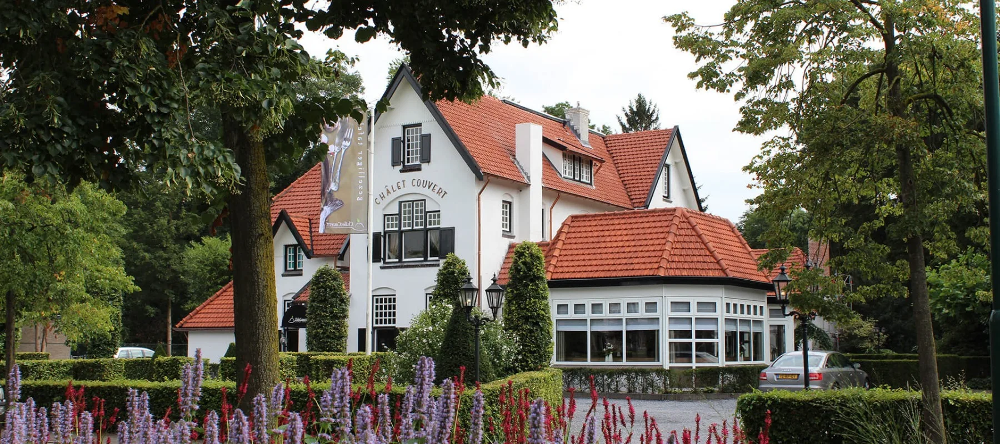
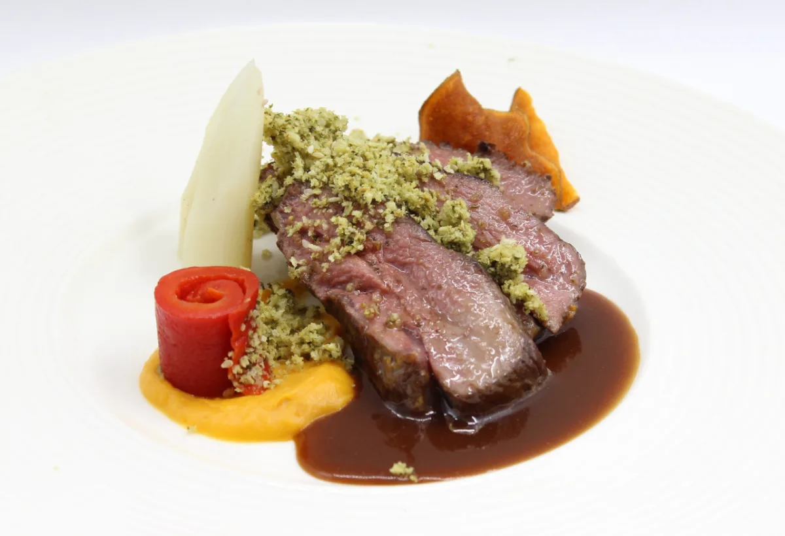
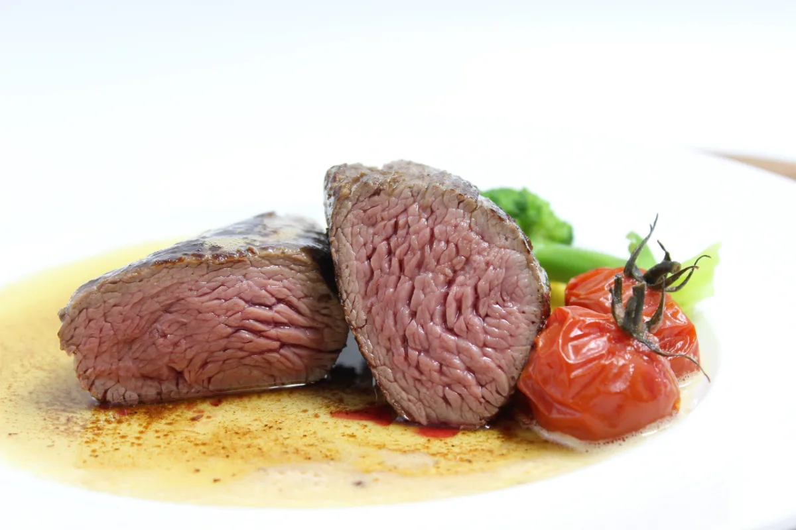
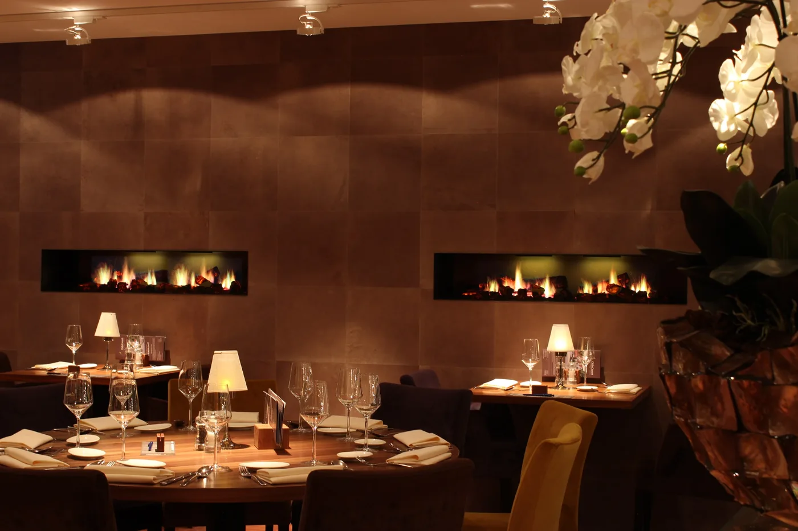

Dorpsstraat 92, Aarle-Rixtel
Onbeperkt genieten aan tafel, de Franse keuken met een Oosterse twist.
Carpaccio, vitello tonnato, Black Angus, sliptong, sushi, oesters en coquilles. U bestelt gang na gang, zo lang u wilt, en sluit af aan het grand dessertbuffet.
Dinsdag t/m zondag vanaf 17.30 uur
All-you-can-eat vanaf € 46,50 p.p.
Welkom bij Châlet Couvert
Een sfeervol en veelzijdig fusion restaurant in Aarle-Rixtel: een Frans georiënteerde keuken met Oosterse invloeden. Gastvrijheid, gezellig tafelen, smaakvolle gerechten met verse ingrediënten en sfeer staan centraal.
Ons doel is een beleving waarbij iedereen zich thuis voelt, met familie, partner, vrienden, collega's of zakelijke relaties. Voor jong en oud.

Zo werkt ons all-you-can-eat concept
Eén gerecht per persoon
U kiest per gang één gerecht per persoon, uit een ruime keuze voor een vaste prijs.
Op? Dan de volgende
Is het gerecht op, dan bestelt u een nieuw gerecht. Het aantal gangen is onbeperkt.
Grand dessertbuffet
Ter afsluiting loopt u langs ons heerlijke grand dessertbuffet.


Prijzen
Eén vaste prijs per persoon voor onbeperkt gerechten en het dessertbuffet. Consumpties zijn niet inbegrepen.
*Feestdagen en speciale dagen: Nieuwjaarsdag, Valentijnsdag, 1e en 2e Paasdag, Koningsdag, Moederdag, 1e en 2e Pinksterdag, Vaderdag en Sinterklaas. Prijswijzigingen, zet-, druk- en typefouten voorbehouden.
Volwassenen
- Dinsdag t/m donderdag€ 46,50
- Vrijdag en zondag€ 51,50
- Zaterdag en feestdagen*€ 54,50
Kinderen
- 2 t/m 6 jaar€ 24,50
- 7 t/m 11 jaar€ 34,50
Kerst 2026 is volgeboekt. Kerstavond, eerste en tweede kerstdag (24, 25 en 26 december) hebben een eigen tarief: € 69,50 p.p., kinderen 2 t/m 6 jaar € 33,50 en 7 t/m 11 jaar € 42,50.

Met een groep: all-in drankarrangement
Voor groepen vanaf 12 personen. 3,5 uur diner en drank, en het begint feestelijk met een glas cava. Daarna geniet u onbeperkt van ons uitgebreide drankassortiment.
Prijzen, 3,5 uur diner & drank
- Dinsdag t/m donderdag€ 61,50
- Vrijdag en zondag€ 68,50
- Zaterdag en feestdagen*€ 71,50
- Kinderen 2 t/m 6 jaar€ 35,50
- Kinderen 7 t/m 11 jaar€ 45,50
Langer blijven? Verleng voor € 4,50 per persoon per half uur, voor de hele tafel.
*Ook Oudejaarsdag geldt hier als feestdag. Op 24, 25 en 26 december is er geen all-in arrangement, zodat iedereen zonder tijdslimiet van het diner kan genieten. Individueel betalen is niet mogelijk.
Inbegrepen
- Frisdranken
- Cola, Seven Up, Sinas, Cassis, Tonic, Bitter Lemon, Ginger Ale, Lipton Ice Tea, Rivella Light, appelsap, Fristi, Chocomel, tafelwater
- Bier
- Hertog Jan van de tap; Hertog Jan 0.0%, Amstel Radler 2% en Amstel Radler 0.0% uit de fles
- Wijnen
- Laurent Miquel Père et Fils Chardonnay, Merlot en Rosé de Syrah; Eclat Gascogne Blanc; Syrah Saverio Faro; zoete witte wijn St. Kilian Bereich Bernkastel; alcoholvrije Winfree De-Alcoholized White Wine
- Koffie en thee
- Koffie, espresso, cappuccino, latte macchiato, koffie verkeerd, thee, verse muntthee, verse gemberthee
Apart berekend: speciaalbieren, verse jus d'orange, à la carte wijnen, gedistilleerd, sterke dranken en cocktails.
Goed om te weten
Antwoorden op de vragen die wij het vaakst krijgen. Staat uw vraag er niet bij? Mail naar info@chaletcouvert.nl.
Parkeren
U parkeert gratis voor de deur, op onze ruime eigen parkeergelegenheid. Wij vragen u vriendelijk om waar mogelijk te carpoolen, om de parkeerdruk en overlast voor onze buren tijdens de feestdagen te beperken.
Allergieën, vegan en dieetwensen
Wij hebben een aparte kaart voor gasten met allergieën, waarop staat welke allergenen een gerecht bevat (bekijk de lijst). Er is eventueel ook een veganistische kaart. Voor andere diëten en wensen kunt u mailen naar info@chaletcouvert.nl.
Zwanger
Net als voor allergenen hebben wij een aangepaste kaart, waarop staat welke gerechten niet geadviseerd worden. De warme gerechten worden zorgvuldig doorbakken.
Kerst 2026
Op kerstavond, eerste en tweede kerstdag geldt een kersttarief (zie prijzen) en volgen aanbetalingen. Alle drie de kerstdagen zijn inmiddels volgeboekt.
Betalen en creditcards
U kunt pinnen of contant betalen. Wij accepteren Mastercard en Visa, maar geen American Express. Individueel betalen is niet mogelijk: wij vragen de rekening per gezelschap in één keer te voldoen, verdelen kan daarna via een Tikkie.
Cadeaubonnen
Cadeaukaarten haalt u elke dag behalve maandag op in het restaurant, vanaf 15.00 uur (tussen 16.30 en 17.30 uur is er pauze). U bepaalt zelf de waarde, van € 20 tot € 200 per bon. Andere dinerbonnen, zoals nationale dinerchecks of VVV-bonnen, accepteren wij niet.
Reserveringsbevestiging
Na een online reservering ontvangt u zo snel mogelijk een bevestiging. Kijk ook even in uw spam; vindt u niets, neem dan contact met ons op.
Kinderen
Er zijn voldoende kinderstoelen, maar helaas geen kinderspeelhoek.
Toegankelijkheid
Het hele restaurant is toegankelijk met een rolstoel en er is een mindervalidentoilet. Geef bij de reservering aan als u met een rolstoel komt, dan zorgen wij dat de plek goed is ingericht.
Honden
Honden zijn helaas niet welkom, met uitzondering van hulp- of geleidehonden.
Op rekening dineren (bedrijven)
Alleen bedrijven kunnen op rekening dineren, op aanvraag vooraf per e-mail en na onze bevestiging. Meestal vult u een formulier in dat u per e-mail ontvangt; vermeld eventuele kostenplaats. De nota wordt ondertekend, de betalingstermijn is maximaal 14 dagen. Wij rekenen € 12,50 administratiekosten per rekening.
Pers
Journalist, freelancer, redacteur of blogger? Voor persinformatie, beeldmateriaal of een interview kunt u mailen naar info@chaletcouvert.nl.
Werken bij Châlet Couvert
Zoek je een leuke (bij)baan of stage in de horeca? Je kunt direct beginnen als medewerker of stagiair, in de keuken of in de bediening. Gastvrijheid, gezelligheid en sfeer staan bij ons centraal. Weet je van aanpakken en ben je niet bang voor een uitdaging? Dan is dit dé job voor jou.
Tot ziens aan de Dorpsstraat
Dorpsstraat 92
5735 EG Aarle-Rixtel
0492 - 38 34 35 bereikbaar vanaf 13.00 uur
info@chaletcouvert.nl
Openingstijden
| Maandag | gesloten |
|---|---|
| Dinsdag t/m donderdag | 17.30 - 22.30keuken sluit 21.30 |
| Vrijdag t/m zondag | 17.30 - 23.00keuken sluit 22.00 |
Het dessertbuffet sluit om 22.00 uur doordeweeks en om 22.30 uur in het weekend.